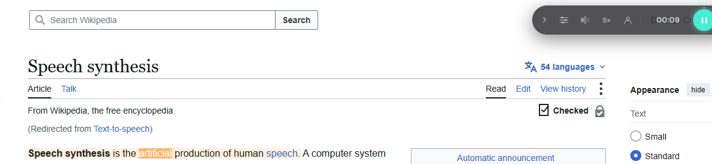
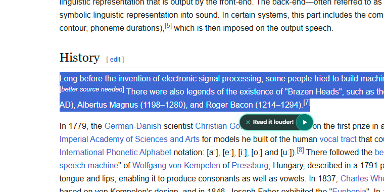
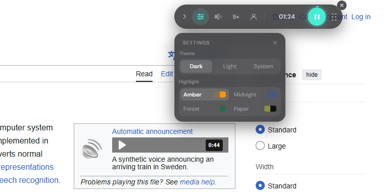
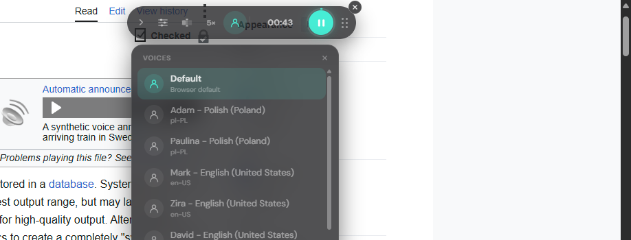

Louder reads any page, email, or selection aloud — highlighting each word and sentence live, so your eyes and ears stay in sync.

Real text-to-speech, right in your browser — nothing to install.
No accounts, no cloud processing — just a fast, focused reading experience.
Full pages, Gmail threads, or just a selection. Select 2+ words and a trigger appears right where you're reading.
Word and sentence highlighting via the CSS Custom Highlight API — nothing is injected into the page.
Louder detects the language of what you're reading and picks a matching voice automatically.
From careful listening to a fast skim, dial in exactly the pace you want.
Amber, Midnight, Forest, and Paper — pick whichever is easiest on your eyes.
Matches your OS automatically, or set it manually.
Every view of the widget, exactly as it looks while reading.


